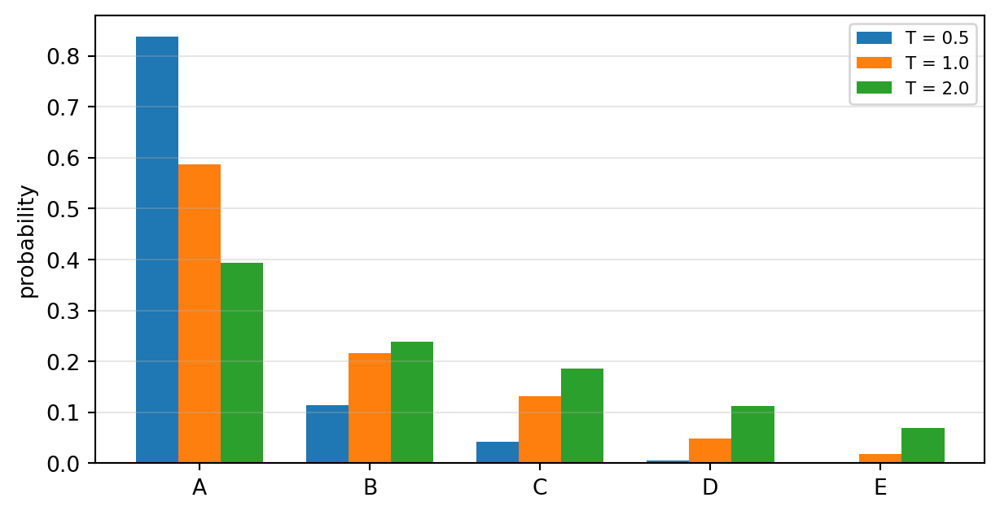

import numpy as np
import pandas as pd
import torch
import torch.nn as nn
import torch.nn.functional as F
import matplotlib.pyplot as plt
torch.set_printoptions(precision=4, sci_mode=False)
torch.manual_seed(42)
def attention(Q, K, V, mask=None):
d = Q.shape[-1]
S = Q @ K.transpose(-2, -1) / (d ** 0.5)
if mask is not None:
S = S.masked_fill(mask, float('-inf'))
W = S.softmax(dim=-1)
return W @ V, W실습 12주차: Transformer 블록과 언어모델

이번 주에 익히는 것
| 개념 | 이론과의 대응 |
|---|---|
| 어텐션은 순서를 모른다 | 순열 실험 (Ch12) |
| 위치 임베딩 | 위치를 입력에 더한다 (Ch12) |
| LayerNorm | 손계산 \((2,4,4,6)\) (Ch12) |
| 잔차 연결 | 깊이 문제의 해법 (Ch12) |
| FFN \(d \to 4d \to d\) | \(8d^2 + 5d\) (Ch12) |
| 블록 파라미터 \(12d^2 + 13d\) | 블록 조립 손계산 (Ch12) |
| GPT-2 124M 검산 | 실제 모델 크기 맞추기 (Ch12) |
| 다음 토큰 확률 · temperature | 손계산 (Ch12) |
| HuggingFace 사용법 | 모델 허브, 토크나이저 짝 (Ch13) |
1. 어텐션은 정말 순서를 모르는가
11주차에서 만든 어텐션을 그대로 가져온다.
1-1. 토큰 순서를 바꿔 본다
torch.manual_seed(0)
d_model = 4
X = torch.randn(1, 3, d_model) # 토큰 3개
Wq = nn.Linear(d_model, d_model, bias=False)
Wk = nn.Linear(d_model, d_model, bias=False)
Wv = nn.Linear(d_model, d_model, bias=False)
def self_attn(X):
return attention(Wq(X), Wk(X), Wv(X))[0]
perm = [2, 0, 1] # 토큰 순서를 섞는다
out_orig = self_attn(X)
out_perm = self_attn(X[:, perm, :])
print('원래 순서로 계산한 출력:\n', out_orig[0].detach().numpy().round(4))
print('\n순서를 섞어 계산한 출력:\n', out_perm[0].detach().numpy().round(4))
print('\n원래 출력을 같은 순서로 재배열:\n', out_orig[0, perm].detach().numpy().round(4))
print('\n두 결과가 같은가:', torch.allclose(out_perm, out_orig[:, perm], atol=1e-6))원래 순서로 계산한 출력:
[[ 0.4075 0.1652 0.0763 -0.146 ]
[ 0.2871 -0.0702 -0.0142 -0.5062]
[ 0.302 -0.041 -0.0032 -0.4614]]
순서를 섞어 계산한 출력:
[[ 0.302 -0.041 -0.0032 -0.4614]
[ 0.4075 0.1652 0.0763 -0.146 ]
[ 0.2871 -0.0702 -0.0142 -0.5062]]
원래 출력을 같은 순서로 재배열:
[[ 0.302 -0.041 -0.0032 -0.4614]
[ 0.4075 0.1652 0.0763 -0.146 ]
[ 0.2871 -0.0702 -0.0142 -0.5062]]
두 결과가 같은가: True출력이 자리만 바뀐 채 그대로다. 어텐션은 “누가 몇 번째인지”를 전혀 모른다. “개가 사람을 물었다”와 “사람이 개를 물었다”를 구별할 수 없다는 뜻이다.
2. 위치 임베딩
2-1. 자리 번호에도 벡터를 준다
max_len = 16
pos_emb = nn.Embedding(max_len, d_model)
positions = torch.arange(3)
print('자리 번호 :', positions.tolist())
print('위치 임베딩 shape:', tuple(pos_emb(positions).shape))
print('파라미터 :', sum(p.numel() for p in pos_emb.parameters()), '= max_len x d =', max_len*d_model)자리 번호 : [0, 1, 2]
위치 임베딩 shape: (3, 4)
파라미터 : 64 = max_len x d = 64def self_attn_pos(X):
T = X.shape[1]
X = X + pos_emb(torch.arange(T)) # 토큰 임베딩 + 위치 임베딩
return attention(Wq(X), Wk(X), Wv(X))[0]
out_orig2 = self_attn_pos(X)
out_perm2 = self_attn_pos(X[:, perm, :])
print('두 결과가 같은가:', torch.allclose(out_perm2, out_orig2[:, perm], atol=1e-6))
print('\n차이의 최대값:', float((out_perm2 - out_orig2[:, perm]).abs().max()))두 결과가 같은가: False
차이의 최대값: 0.8768643140792847이제 순서를 바꾸면 결과가 달라진다. 자리 정보가 입력에 실렸기 때문이다.
직접 해보기 ① — 위치 임베딩의 파라미터 수
GPT-2 small은 최대 길이 1,024, \(d=768\) 이다. 위치 임베딩의 파라미터 수는? 먼저 계산한 뒤 확인하시오.
my_answer = None # ← 예상값
real = sum(p.numel() for p in nn.Embedding(1024, 768).parameters())
assert my_answer == real, f'다릅니다. 실제 {real:,}'
print('통과', f'{real:,}')정답 코드 보기
my_answer = 1024 * 768
real = sum(p.numel() for p in nn.Embedding(1024, 768).parameters())
print('공식 1024 x 768 =', f'{my_answer:,}', ' 실제 =', f'{real:,}')
print('토큰 임베딩(50257 x 768)과 비교:', f'{50257*768:,}', ' ← 위치 쪽이 훨씬 작다')공식 1024 x 768 = 786,432 실제 = 786,432
토큰 임베딩(50257 x 768)과 비교: 38,597,376 ← 위치 쪽이 훨씬 작다
곱하지 않고 더한다
\[\text{입력} = \text{토큰 임베딩} + \text{위치 임베딩}\]
같은 \(d\) 차원 공간에 “무엇인가”와 “몇 번째인가”를 함께 실어 보내는 것이다. max_len 은 모델이 다룰 수 있는 최대 길이가 된다 — GPT-2 small은 1,024다.
3. LayerNorm — 이 장의 유일한 새 계산
3-1. Ch12의 손계산 재현
\(x = (2, 4, 4, 6)\), \(\gamma = 1\), \(\beta = 0\).
x = torch.tensor([2., 4., 4., 6.])
mu = x.mean()
var = x.var(unbiased=False) # 분모는 n (Ch04의 약속과 같다)
xhat = (x - mu) / torch.sqrt(var + 1e-5)
print(pd.DataFrame({'원본 x': x.numpy(), 'x - μ': (x-mu).numpy(),
'(x-μ)²': ((x-mu)**2).numpy(), '정규화 x̂': xhat.numpy().round(4)}
).to_string(index=False))
print(f'\nμ = {float(mu)} σ² = {float(var)} σ = {float(var.sqrt()):.4f}')
print('검산 — 평균:', round(float(xhat.mean()), 6), ' 표준편차:', round(float(xhat.std(unbiased=False)), 4)) 원본 x x - μ (x-μ)² 정규화 x̂
2.0 -2.0 4.0 -1.4142
4.0 0.0 0.0 0.0000
4.0 0.0 0.0 0.0000
6.0 2.0 4.0 1.4142
μ = 4.0 σ² = 2.0 σ = 1.4142
검산 — 평균: 0.0 표준편차: 1.0unbiased=False 를 잊지 않는다
torch.var 의 기본값은 분모 \(n-1\) 이다. LayerNorm은 분모 \(n\) 을 쓴다. 4주차에서 정한 약속과 같다 — 이 수업에서 표준편차의 분모는 항상 \(n\) 이다.
3-2. nn.LayerNorm 과 대조
ln = nn.LayerNorm(4)
print('γ (weight):', ln.weight.detach().numpy())
print('β (bias) :', ln.bias.detach().numpy())
print('파라미터 :', sum(p.numel() for p in ln.parameters()), '= 2d =', 2*4)
print('\n직접 계산 :', xhat.numpy().round(4))
print('nn.LayerNorm:', ln(x).detach().numpy().round(4))γ (weight): [1. 1. 1. 1.]
β (bias) : [0. 0. 0. 0.]
파라미터 : 8 = 2d = 8
직접 계산 : [-1.4142 0. 0. 1.4142]
nn.LayerNorm: [-1.4142 0. 0. 1.4142]3-3. 어느 축으로 평균을 내는가
h = torch.randn(2, 5, 8) # (B, T, d)
ln8 = nn.LayerNorm(8)
y = ln8(h)
print('입력 shape:', tuple(h.shape))
print('출력 shape:', tuple(y.shape), ' ← 모양은 그대로')
print('\n마지막 축의 평균 (토큰마다):\n', y.mean(dim=-1).detach().numpy().round(6))
print('\n마지막 축의 표준편차:\n', y.std(dim=-1, unbiased=False).detach().numpy().round(4))입력 shape: (2, 5, 8)
출력 shape: (2, 5, 8) ← 모양은 그대로
마지막 축의 평균 (토큰마다):
[[ 0. 0. -0. -0. -0.]
[-0. 0. -0. 0. 0.]]
마지막 축의 표준편차:
[[1. 1. 1. 1. 1.]
[1. 1. 1. 1. 1.]]토큰 하나의 \(d\) 차원 벡터 안에서 평균과 표준편차를 낸다. 배치 방향이나 시퀀스 방향이 아니다 — 그래서 문장 길이가 제각각이어도 안전하다.
4. 잔차 연결 — 깊이 문제의 해법
\[\text{출력} = x + \text{sublayer}(x)\]
4-1. 20층을 쌓고 기울기를 재 본다
d, L = 32, 20
class Sub(nn.Module):
def __init__(self):
super().__init__()
self.f = nn.Sequential(nn.Linear(d, d), nn.Tanh())
def forward(self, x):
return self.f(x)
def gradient_at_input(residual):
torch.manual_seed(0)
layers = nn.ModuleList([Sub() for _ in range(L)])
x = torch.randn(4, d, requires_grad=True)
h = x
for layer in layers:
h = h + layer(h) if residual else layer(h)
h.sum().backward()
return float(x.grad.abs().mean())
g_no = gradient_at_input(False)
g_yes = gradient_at_input(True)
print(f'잔차 없이 20층 : 입력에 도달한 기울기 = {g_no:.6g}')
print(f'잔차 있고 20층 : 입력에 도달한 기울기 = {g_yes:.6g}')
print(f'\n배율 : {g_yes/g_no:,.0f}배')잔차 없이 20층 : 입력에 도달한 기울기 = 5.61683e-06
잔차 있고 20층 : 입력에 도달한 기울기 = 3.1794
배율 : 566,048배4주차에서 본 기울기 소실이 그대로 재현된다. 잔차 연결은 역전파에 곱셈을 우회하는 길을 하나 열어 주어 기울기가 그대로 앞까지 도달하게 한다.
4-2. 순서 — Pre-LN
class PreLN(nn.Module):
"""x + sublayer(LayerNorm(x))"""
def __init__(self, d, sublayer):
super().__init__()
self.norm = nn.LayerNorm(d)
self.sublayer = sublayer
def forward(self, x, **kw):
return x + self.sublayer(self.norm(x), **kw)
blk = PreLN(8, nn.Linear(8, 8))
z = torch.randn(2, 5, 8)
print('입력:', tuple(z.shape), ' 출력:', tuple(blk(z).shape), ' ← 모양 보존')입력: (2, 5, 8) 출력: (2, 5, 8) ← 모양 보존정규화를 서브층 앞에 두는 방식(Pre-LN)이 현대 구현의 기본값이다. 깊게 쌓아도 학습이 안정적이기 때문이다.
5. FFN — 토큰마다 따로 가공
class FFN(nn.Module):
def __init__(self, d, mult=4):
super().__init__()
self.net = nn.Sequential(
nn.Linear(d, mult*d), nn.GELU(), nn.Linear(mult*d, d))
def forward(self, x):
return self.net(x)
d_ = 768
ffn = FFN(d_)
print('파라미터 :', f'{sum(p.numel() for p in ffn.parameters()):,}')
print('공식 8d²+5d:', f'{8*d_*d_ + 5*d_:,}')파라미터 : 4,722,432
공식 8d²+5d: 4,722,432z = torch.randn(2, 5, 16)
f16 = FFN(16)
print('입력:', tuple(z.shape), '→ 출력:', tuple(f16(z).shape))
print('\n토큰마다 독립적으로 적용되는가:',
torch.allclose(f16(z)[0, 0], f16(z[0, 0])[None].squeeze(0), atol=1e-6))입력: (2, 5, 16) → 출력: (2, 5, 16)
토큰마다 독립적으로 적용되는가: TrueFFN은 토큰끼리 섞지 않는다. 토큰을 섞는 것은 어텐션의 일이고, FFN은 각 토큰의 벡터를 넓혔다가 다시 줄이며 가공만 한다.
직접 해보기 ② — FFN을 직접 세어 보기
\(d = 512\), 확장 배수 4일 때 FFN의 파라미터 수를 공식 \(8d^2 + 5d\) 로 계산하고, FFN(512) 의 실제 값과 맞는지 확인하시오.
d_test = 512
my_answer = None # ← 8d² + 5d
real = sum(p.numel() for p in FFN(d_test).parameters())
assert my_answer == real, f'다릅니다. 실제 {real:,}'
print('통과', f'{real:,}')정답 코드 보기
d_test = 512
my_answer = 8 * d_test ** 2 + 5 * d_test
real = sum(p.numel() for p in FFN(d_test).parameters())
print('공식 8d²+5d =', f'{my_answer:,}', ' 실제 =', f'{real:,}')
print('내역: (512x2048+2048) + (2048x512+512) =',
f'{512*2048+2048:,}', '+', f'{2048*512+512:,}')공식 8d²+5d = 2,099,712 실제 = 2,099,712
내역: (512x2048+2048) + (2048x512+512) = 1,050,624 + 1,049,0886. 블록 조립
class Block(nn.Module):
def __init__(self, d, n_head=4, mult=4):
super().__init__()
self.ln1 = nn.LayerNorm(d)
self.attn = nn.MultiheadAttention(d, n_head, batch_first=True)
self.ln2 = nn.LayerNorm(d)
self.ffn = FFN(d, mult)
def forward(self, x, causal=True):
T = x.shape[1]
m = torch.triu(torch.ones(T, T, dtype=torch.bool, device=x.device), 1) if causal else None
h = self.ln1(x)
x = x + self.attn(h, h, h, attn_mask=m, need_weights=False)[0] # ① 어텐션 + 잔차
x = x + self.ffn(self.ln2(x)) # ② FFN + 잔차
return x
d_ = 768
blk = Block(d_)
rows = [
('Multi-Head Attention', '4d² + 4d', sum(p.numel() for p in blk.attn.parameters())),
('FFN (d→4d→d)', '8d² + 5d', sum(p.numel() for p in blk.ffn.parameters())),
('LayerNorm × 2', '4d', sum(p.numel() for p in blk.ln1.parameters())
+ sum(p.numel() for p in blk.ln2.parameters())),
]
rows.append(('합계', '12d² + 13d', sum(r[2] for r in rows)))
df = pd.DataFrame(rows, columns=['부품', '공식', f'실제 (d={d_})'])
df['공식으로 계산'] = [4*d_**2+4*d_, 8*d_**2+5*d_, 4*d_, 12*d_**2+13*d_]
print(df.to_string(index=False)) 부품 공식 실제 (d=768) 공식으로 계산
Multi-Head Attention 4d² + 4d 2362368 2362368
FFN (d→4d→d) 8d² + 5d 4722432 4722432
LayerNorm × 2 4d 3072 3072
합계 12d² + 13d 7087872 7087872Ch12에서 손으로 센 7,087,872개와 같다.
x = torch.randn(2, 6, d_)
print('입력:', tuple(x.shape), '→ 출력:', tuple(blk(x).shape), ' ← 모양 보존')입력: (2, 6, 768) → 출력: (2, 6, 768) ← 모양 보존모양이 보존되므로 그대로 다시 넣을 수 있다. 이것이 층을 쌓는 근거다.
7. 블록을 쌓아 언어모델 만들기
class MiniGPT(nn.Module):
def __init__(self, V, d=128, n_layer=4, n_head=4, max_len=64):
super().__init__()
self.tok = nn.Embedding(V, d)
self.pos = nn.Embedding(max_len, d)
self.blocks = nn.ModuleList([Block(d, n_head) for _ in range(n_layer)])
self.ln_f = nn.LayerNorm(d)
self.head = nn.Linear(d, V, bias=False)
def forward(self, ids):
B, T = ids.shape
x = self.tok(ids) + self.pos(torch.arange(T, device=ids.device))
for b in self.blocks:
x = b(x)
return self.head(self.ln_f(x)) # (B, T, V) — 자리마다 어휘 전체의 로짓
mini = MiniGPT(V=1000, d=128, n_layer=4)
ids = torch.randint(0, 1000, (2, 10))
logits = mini(ids)
print('입력 ids :', tuple(ids.shape), ' (B, T)')
print('출력 :', tuple(logits.shape), ' (B, T, V)')
print('파라미터 :', f'{sum(p.numel() for p in mini.parameters()):,}')입력 ids : (2, 10) (B, T)
출력 : (2, 10, 1000) (B, T, V)
파라미터 : 1,057,536출력이 (B, T, V) 인 것이 핵심이다. 자리마다 “다음에 올 토큰”의 로짓을 낸다. \(T\) 개의 빈칸 문제를 한 번에 푸는 셈이다.
7-1. GPT-2 small의 크기를 공식으로 맞춘다
d, n_layer, V, L = 768, 12, 50257, 1024
blocks = n_layer * (12*d*d + 13*d)
tok_emb = V * d
pos_emb_ = L * d
ln_f = 2 * d
rows = [('블록 12층', f'12 x (12x{d}² + 13x{d})', blocks),
('토큰 임베딩', f'{V:,} x {d}', tok_emb),
('위치 임베딩', f'{L:,} x {d}', pos_emb_),
('마지막 LayerNorm', f'2 x {d}', ln_f)]
rows.append(('합계', '', sum(r[2] for r in rows)))
print(pd.DataFrame(rows, columns=['부품', '계산', '파라미터']).to_string(index=False)) 부품 계산 파라미터
블록 12층 12 x (12x768² + 13x768) 85054464
토큰 임베딩 50,257 x 768 38597376
위치 임베딩 1,024 x 768 786432
마지막 LayerNorm 2 x 768 1536
합계 124439808Ch12의 표는 블록·토큰 임베딩·위치 임베딩 세 가지만 세어 124,438,272 를 얻었다. 여기에 마지막 블록 뒤에 하나 더 있는 LayerNorm \(2d = 1{,}536\) 을 더하면 공개된 GPT-2 small의 파라미터 수와 정확히 일치한다. 다음 절에서 확인한다.
8. 실제 GPT-2를 열어 본다
8-1. 모델 불러오기
from transformers import AutoTokenizer, AutoModelForCausalLM
tok = AutoTokenizer.from_pretrained('gpt2')
gpt2 = AutoModelForCausalLM.from_pretrained('gpt2')
gpt2.eval()
cfg = gpt2.config
print('d_model :', cfg.n_embd)
print('블록 수 :', cfg.n_layer)
print('head 수 :', cfg.n_head)
print('어휘 V :', cfg.vocab_size)
print('최대 길이 :', cfg.n_positions)
print('\n파라미터 :', f'{sum(p.numel() for p in gpt2.parameters()):,}')
print('우리 공식 :', f'{sum(r[2] for r in rows[:-1]):,}')d_model : 768
블록 수 : 12
head 수 : 12
어휘 V : 50257
최대 길이 : 1024
파라미터 : 124,439,808
우리 공식 : 124,439,808
우리가 센 숫자가 실제 모델의 숫자다
블랙박스가 아니다. \(d\) 와 층 수만 알면 크기를 계산할 수 있는 구조물이다. (출력층은 토큰 임베딩과 가중치를 공유하므로 따로 세지 않는다.)
8-2. 안을 들여다본다
print(gpt2.transformer.h[0])GPT2Block(
(ln_1): LayerNorm((768,), eps=1e-05, elementwise_affine=True)
(attn): GPT2SdpaAttention(
(c_attn): Conv1D(nf=2304, nx=768)
(c_proj): Conv1D(nf=768, nx=768)
(attn_dropout): Dropout(p=0.1, inplace=False)
(resid_dropout): Dropout(p=0.1, inplace=False)
)
(ln_2): LayerNorm((768,), eps=1e-05, elementwise_affine=True)
(mlp): GPT2MLP(
(c_fc): Conv1D(nf=3072, nx=768)
(c_proj): Conv1D(nf=768, nx=3072)
(act): NewGELUActivation()
(dropout): Dropout(p=0.1, inplace=False)
)
)b0 = gpt2.transformer.h[0]
print('블록 0 파라미터 :', f'{sum(p.numel() for p in b0.parameters()):,}')
print('공식 12d²+13d :', f'{12*768**2 + 13*768:,}')
print()
for name, mod in b0.named_children():
print(f' {name:6s} {mod.__class__.__name__:12s} {sum(p.numel() for p in mod.parameters()):>10,}')블록 0 파라미터 : 7,087,872
공식 12d²+13d : 7,087,872
ln_1 LayerNorm 1,536
attn GPT2SdpaAttention 2,362,368
ln_2 LayerNorm 1,536
mlp GPT2MLP 4,722,432ln_1 → attn → ln_2 → mlp — 우리가 만든 Block 과 같은 구조다.
8-3. 다음 토큰 확률
prompt = "The capital of France is"
ids = tok(prompt, return_tensors='pt')['input_ids']
print('토큰:', tok.convert_ids_to_tokens(ids[0]))
print('ids shape:', tuple(ids.shape))
with torch.no_grad():
out = gpt2(ids)
print('로짓 shape:', tuple(out.logits.shape), ' (B, T, V)')
last = out.logits[0, -1] # 마지막 자리의 로짓만 쓴다
probs = last.softmax(dim=-1)
top = probs.topk(8)
print('\n다음 토큰 후보:')
for p, i in zip(top.values.tolist(), top.indices.tolist()):
print(f' {tok.decode([i])!r:14s} {p*100:5.2f}%')토큰: ['The', 'Ġcapital', 'Ġof', 'ĠFrance', 'Ġis']
ids shape: (1, 5)
로짓 shape: (1, 5, 50257) (B, T, V)
다음 토큰 후보:
' the' 8.46%
' now' 4.79%
' a' 4.62%
' France' 3.24%
' Paris' 3.22%
' in' 2.66%
' also' 2.64%
' not' 2.38%3주차의 Softmax가 그대로 쓰였다. 바뀐 것은 클래스 수가 5만 개라는 것뿐이다.
9. Temperature
9-1. Ch12의 손계산 재현
tokens5 = ['갔다', '왔다', '있다', '먹었다', '고양이']
z = torch.tensor([2.0, 1.0, 0.5, -0.5, -1.5])
def softmax_T(z, T):
return (z / T).softmax(dim=-1)
df = pd.DataFrame({'토큰': tokens5, '로짓': z.numpy()})
for T in [0.5, 1.0, 2.0]:
df[f'T={T}'] = [f'{v*100:.1f}%' for v in softmax_T(z, T).numpy()]
print(df.to_string(index=False)) 토큰 로짓 T=0.5 T=1.0 T=2.0
갔다 2.0 83.8% 58.7% 39.4%
왔다 1.0 11.3% 21.6% 23.9%
있다 0.5 4.2% 13.1% 18.6%
먹었다 -0.5 0.6% 4.8% 11.3%
고양이 -1.5 0.1% 1.8% 6.8%로짓은 하나도 바뀌지 않았는데 “갔다”의 확률이 83.8% → 58.7% → 39.4%로 달라진다. Temperature는 모델의 판단을 바꾸는 것이 아니라 판단의 확신 정도를 표현하는 방식을 바꾼다.
plt.figure(figsize=(6.5, 3.4))
w = 0.25
xs = np.arange(len(tokens5))
for k, T in enumerate([0.5, 1.0, 2.0]):
plt.bar(xs + (k-1)*w, softmax_T(z, T).numpy(), width=w, label=f'T = {T}')
plt.xticks(xs, ['A', 'B', 'C', 'D', 'E']); plt.ylabel('probability')
plt.legend(fontsize=8); plt.grid(alpha=0.3, axis='y'); plt.tight_layout(); plt.show()
9-2. 실제 GPT-2에 적용
for T in [0.3, 1.0, 2.0]:
p = (last / T).softmax(dim=-1)
top = p.topk(5)
s = ' '.join(f'{tok.decode([i]).strip()!r} {v*100:.1f}%'
for v, i in zip(top.values.tolist(), top.indices.tolist()))
print(f'T = {T:<4} {s}')T = 0.3 'the' 69.0% 'now' 10.4% 'a' 9.2% 'France' 2.8% 'Paris' 2.8%
T = 1.0 'the' 8.5% 'now' 4.8% 'a' 4.6% 'France' 3.2% 'Paris' 3.2%
T = 2.0 'the' 0.5% 'now' 0.4% 'a' 0.4% 'France' 0.3% 'Paris' 0.3%9-3. 생성해 보기
torch.manual_seed(0)
for T in [0.3, 1.0, 1.5]:
g = gpt2.generate(ids, max_new_tokens=20, do_sample=True, temperature=T,
top_k=0, pad_token_id=tok.eos_token_id)
print(f'T={T}: {tok.decode(g[0], skip_special_tokens=True)}')T=0.3: The capital of France is now home to the world's largest oil reserves. The country's oil reserves are estimated to be worth
T=1.0: The capital of France is now a sleepy, sleepy city in the northwest of Cyprus, and it is France by now suddenly in
T=1.5: The capital of France is Zaragoza within walking distance on Independence Day morning when it counts Alexander Taags burial charges at risk\(T\) 를 낮추면 안전하고 반복적인 문장이, 높이면 다양하지만 엉뚱한 문장이 나온다. 사실을 다루는 작업에는 낮은 \(T\), 아이디어를 여러 개 뽑는 작업에는 높은 \(T\) 를 쓴다.
직접 해보기 ③ — 직접 문장을 넣어 보기
자기가 고른 영어 문장을 넣어 다음 토큰 후보 5개와 확률을 확인하고, temperature를 바꿔 생성 결과가 어떻게 달라지는지 보시오.
my_prompt = None # ← 영어 문장을 적으세요 (GPT-2는 영어 전용)
my_ids = tok(my_prompt, return_tensors='pt')['input_ids']
with torch.no_grad():
my_logits = gpt2(my_ids).logits[0, -1]
top = my_logits.softmax(-1).topk(5)
for p_, i_ in zip(top.values.tolist(), top.indices.tolist()):
print(f'{tok.decode([i_])!r:14s} {p_*100:5.2f}%')예시 보기
my_prompt = 'Deep learning models are'
my_ids = tok(my_prompt, return_tensors='pt')['input_ids']
with torch.no_grad():
my_logits = gpt2(my_ids).logits[0, -1]
top = my_logits.softmax(-1).topk(5)
print(my_prompt)
for p_, i_ in zip(top.values.tolist(), top.indices.tolist()):
print(f' {tok.decode([i_])!r:14s} {p_*100:5.2f}%')
torch.manual_seed(0)
for T in [0.3, 1.2]:
g = gpt2.generate(my_ids, max_new_tokens=18, do_sample=True, temperature=T,
top_k=0, pad_token_id=tok.eos_token_id)
print(f'\nT={T}: {tok.decode(g[0], skip_special_tokens=True)}')Deep learning models are
' often' 3.74%
' a' 3.31%
' not' 3.24%
' used' 3.13%
' based' 2.22%
T=0.3: Deep learning models are based on the idea that the brain is a collection of neurons. The brain is a collection
T=1.2: Deep learning models are increasingly turning national sovereignty efforts into billboard triumphs and beyond alarm. Designing border crossings to10. HuggingFace 사용법 정리
10-1. pipeline — 가장 짧은 길
from transformers import pipeline
gen = pipeline('text-generation', model='gpt2', tokenizer=tok, device=-1)
print(gen('Machine learning is', max_new_tokens=15, do_sample=False)[0]['generated_text'])Machine learning is a very powerful tool for learning about the world around us. It's a10-2. 토크나이저와 모델은 반드시 짝을 맞춘다
wrong_tok = AutoTokenizer.from_pretrained('klue/bert-base')
print('gpt2 토크나이저의 어휘 크기 :', tok.vocab_size)
print('klue/bert-base 토크나이저의 어휘 :', wrong_tok.vocab_size)
print('gpt2 모델이 기대하는 어휘 크기 :', gpt2.config.vocab_size)
print('\n같은 문장을 각각 토큰화:')
print(' gpt2 :', tok.tokenize('Deep learning is fun'))
print(' klue :', wrong_tok.tokenize('Deep learning is fun'))gpt2 토크나이저의 어휘 크기 : 50257
klue/bert-base 토크나이저의 어휘 : 32000
gpt2 모델이 기대하는 어휘 크기 : 50257
같은 문장을 각각 토큰화:
gpt2 : ['Deep', 'Ġlearning', 'Ġis', 'Ġfun']
klue : ['De', '##ep', 'le', '##ar', '##ning', 'is', 'f', '##un']
짝이 맞지 않으면 조용히 망가진다
토크나이저가 내는 번호와 모델이 기대하는 번호가 다르면, 모델은 전혀 다른 단어를 읽게 된다. 에러가 안 날 수도 있다 — 7주차의 정규화 통계 문제와 같은 종류다.
from_pretrained 에 같은 이름을 넣는 것이 안전하다.
10-3. 모델을 고를 때 확인할 것 (Ch13)
| 확인 항목 | 어디서 보나 |
|---|---|
| 무슨 데이터로 학습했나 | 모델 카드의 Training data |
| 무슨 작업용인가 | 태그 (text-generation, fill-mask, image-classification …) |
| 어떤 언어인가 | GPT-2는 영어 전용이다 |
| 라이선스 | 상업적 이용 가능 여부 — 프로젝트에서 반드시 확인 |
print('모델 이름 :', gpt2.config._name_or_path)
print('아키텍처 :', gpt2.config.architectures)
print('작업 종류 : text-generation (다음 토큰 예측)')모델 이름 : gpt2
아키텍처 : ['GPT2LMHeadModel']
작업 종류 : text-generation (다음 토큰 예측)11. 정리
블록 하나의 구조
\[x \;\to\; x + \text{Attn}(\text{LN}(x)) \;\to\; x + \text{FFN}(\text{LN}(x))\]
이 블록을 12번 쌓고 임베딩과 출력층을 붙이면 GPT-2다.
스스로 확인해 보기
아래 결과를 먼저 예상한 뒤 실행해서 대조한다.
for d_, n_layer_, name in [(768, 12, 'GPT-2 small'), (1024, 24, 'GPT-2 medium'),
(1600, 48, 'GPT-2 XL')]:
blocks_ = n_layer_ * (12*d_*d_ + 13*d_)
emb_ = 50257*d_ + 1024*d_
print(f'{name:14s} d={d_:5d} L={n_layer_:2d} 블록 {blocks_:>12,} '
f'임베딩 {emb_:>11,} 합계 {blocks_+emb_+2*d_:>12,}')
print()
b = Block(64, n_head=8)
x = torch.randn(3, 7, 64)
print('블록 입력 :', tuple(x.shape))
print('블록 출력 :', tuple(b(x).shape))
print('파라미터 :', sum(p.numel() for p in b.parameters()), '= 12x64²+13x64 =', 12*64**2+13*64)GPT-2 small d= 768 L=12 블록 85,054,464 임베딩 39,383,808 합계 124,439,808
GPT-2 medium d= 1024 L=24 블록 302,309,376 임베딩 52,511,744 합계 354,823,168
GPT-2 XL d= 1600 L=48 블록 1,475,558,400 임베딩 82,049,600 합계 1,557,611,200
블록 입력 : (3, 7, 64)
블록 출력 : (3, 7, 64)
파라미터 : 49984 = 12x64²+13x64 = 49984다음 주
13주차는 프로젝트 워크숍이다. 새 실습은 없다. 1차·2차 수집 결과를 3단계로 비교하고 발표를 준비한다.